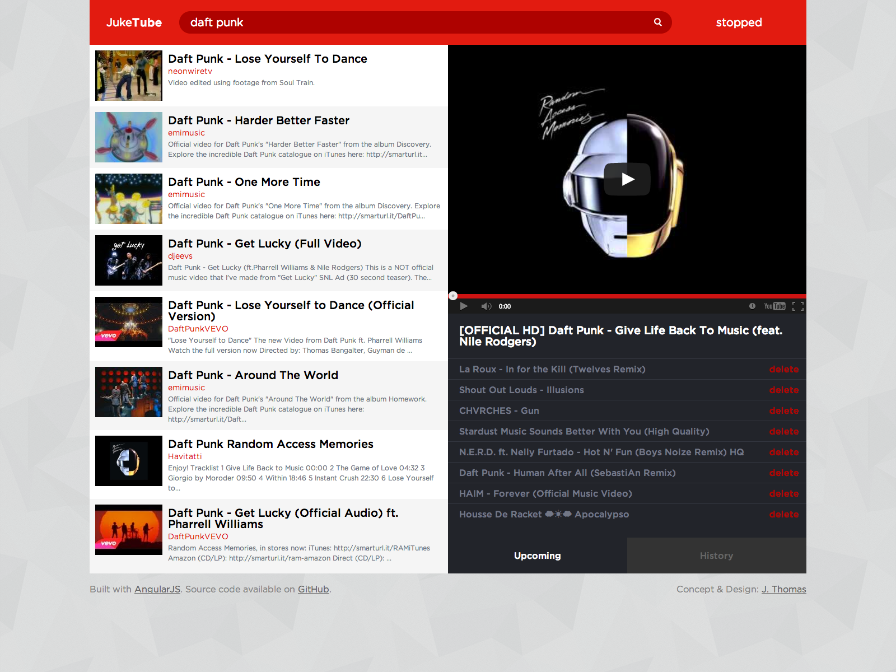
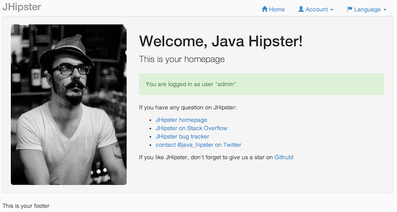

Modern JavaScript Development
Henk Bakker
Why JavaScript
How it all started
The Birth of JavaScript

"The world's most misunderstood programming language"
by Douglas Crockford
The ancestors of JavaScript
- Functions (Lamda)
- Lexical Scope
- Loosely Typed
- Prototypal Inheritance
- Dynamic Objects
- Syntax
- Some conventions
- Name (part)


Did you mean ECMAScript
- 1996 – First public release
- 1999 – Becomes standard ECMA-262 as ECMAScript 3
- 2009 – Major update ECMAScript 5
- 2011 – Last review ECMAScript 5.1 (ISO/IEC 16262:2011)
- WIP* – Next version ECMAScript 6
* Work In Progress
"JavaScript is the only language people feel like they don't need to learn to use it"
by Douglas Crockford
Back to the Basics
JavaScript building blocks
Functions
- Functions are first-class objects (citizen)
-
- Can be created at runtime
- Can be stored in variables
- Can be passed as parameters to functions
- Can be returned by functions
- Can be expressed as anonymous literals
Functions
//function definition (global)
function greet(name) {
return 'hello ' + name;
}
//anonymous function expression
var greet = function (name) {
return 'hello ' + name;
};
//named function expression
var greet = function greet(name) {
return 'hello ' + name;
};
//passed as argument
var surround = function (func, name) {
return '(' + func(name) + ')';
}
// returned
var makeGreet = function () {
return function (name){
return 'hello' + name;
};
};
Functions
- Fundamental modular unit
-
- Encloses a set of statements
- Code Reuse
- Information Hiding
- Object Composition
Scope
- No block-level scope
- Lexical Scoping
- Function
- Global
- Scope chain
Two-Way data binding
Two-way data binding is the automatic synchronization
of data between the model and view.
$scope inheritance
When a new $scope is created, it's added
as a child of it's parent $scope.
MyControllers.js
function ParentController($scope) {
$scope.person = {
name : 'Henk Bakker',
helloText: ''
};
};
function ChildController($scope) {
$scope.sayHello = function () {
$scope.person.helloText = "Hi " + $scope.person.name;
}
};
$scope inheritance 2
MyView.html
<div ng-controller="ParentController">
<form ng-controller="ChildController">
<input type="text" ng-model="person.name" placeholder="Name">
<button ng-click="sayHello()">Say hello</button>
</form>
<p>{{ person.helloText }}</p>
</div>
person.helloText = {{ person.helloText }}
Services
Injctable objects that carry out specific tasks.
Provide a way to separate concerns and re-use code.
- $http (ajax)
- $locale
- $timeout
- $filter
$http
The $http service makes easier to integration with external APIs.
Main methods: .get, .post, .put, .delete, .jsonp
$http.get('http://address-of.the/api')
.success(successCallback)
.error(errorCallback);
$http.post('http://address-of.the/api', data)
.success(successCallback)
.error(errorCallback);
$http - example
function BeerController($scope, $http) {
$scope.makeRequest = function () {
$http.jsonp('http://api.openbeerdatabase.com/v1/beers.json')
.success(function (data, status) {
$scope.beers = data.beers;
})
.error(function () {
$scope.beers = [{ name: "No beer for you :(" }]
});
};
};
<div ng-controller="BeerController">
<ul>
<li ng-repeat="beer in beers | limitTo:15">
{{ beer.name }} - {{ beer.brewery.name }}
</li>
</ul>
<button ng-click="makeRequest()">Get beers</button>
</div>
$http - Result
- {{ beer.title }} {{ beer.brewery.title }}
Modules
Angular modules declaratively specify
how an application should be
bootstrapped.
var app = angular.module('myApp', ['third-part-module']);
app.config(function () { ... });
app.controller('myController', ...);
app.service('myService', ...);
<html ng-app="myApp">
...
</html>
Routing
In a more complex app you can use the $routeProvider service, to define which controller and template will be loaded in each path.
var app = angular.module('myApp');
app.config(function ($routeProvider) {
$routeProvider
.when('/', {
controller :'mainController', templateUrl :'/views/index.html'
})
.when('/newPost/', {
controller :'newPostController', templateUrl :'/views/newPost.html'
})
.when('/posts/:id', {
controller :'postsController', templateUrl :'/views/posts.html'
})
.otherwise({ redirectTo : '/' });
});
Directives
"Teach new tricks to the HTML"
- Create custom attributes
- Create custom HTML tags
(based on W3C webcomponents specification)
Directives 2
All the attributes that begin with "ng" are AngularJS directives.
- ng-app
- ng-controller
- ng-model
- ng-repeat
- ng-click
- ng-view
- ...
Directives 3
How to use directives
<!doctype html>
<html ng-app="myApp">
<head>
<script src="../js/angular.min.js"></script>
</head>
<body>
<ul ng-controller="myListController">
<li ng-repeat="item in items">
{{ item.name }}
</li>
</ul>
</body>
</html>
Directives 4
You can also create you own directive.
- element: <my-directive></my-directive>
- atribute: <span my-directive="value"></span>
- class: <span class="my-directive: value;"></span>
- comment: <!-- directive: my-directive value -->
Directives 5
var app = angular.module('myApp');
app.directive('myDirective', function () {
return {
restrict: 'EA',
link: function ($scope, element) {
element.text('Text from directive');
}
};
});
<my-directive> </my-directive>
<div my-directive> </div>
Directives 6
var app = angular.module('myApp');
app.directive('myDirective', function () {
return {
restrict: 'E',
replace: true,
template: ''
link: function ($scope, element) {
element.text('Text from directive');
}
};
});
<my-directive> </my-directive>
<h1 class="title">Text from directive</h1>
Testing your App
A framework to be easily tested
Tools:
- Karma Test runner
- Jasmine Test framework
Testing a controller
describe('Testing Controller', function () {
var ctrl, scope;
beforeEach(angular.mock.module('myApp'));
beforeEach(inject(function ($controller, $rootScope) {
scope = $rootScope.$new();
ctrl = $controller('myController', { $scope: scope });
}));
it('should exist a controller called myController', function() {
expect(scope).not.toBeUndefined();
});
});
End-to-end Tests
describe('Grocery list', function () {
beforeEach(function () {
browser().navigateTo('/');
});
it('filters the grocery list based on the search query', function() {
expect(repeater('.groceries li').count()).toBe(5);
input('query').enter('b');
expect(repeater('.groceries li').count()).toBe(3);
input('query').enter('blueberry');
expect(repeater('.groceries li').count()).toBe(1);
});
});
DEMO TIME
JukeTube
jHipster
Ionic
Learn
- Thinkster - http://thinkster.io/
- Year of Moo - http://www.yearofmoo.com/
- HTML5 Rocks - http://html5rocks.com/
- TodoMVC - http://todomvc.com/
References
- Angular - http://angularjs.org/
- Karma - http://karma-runner.github.io/
- Jasmine - http://pivotal.github.io/jasmine/